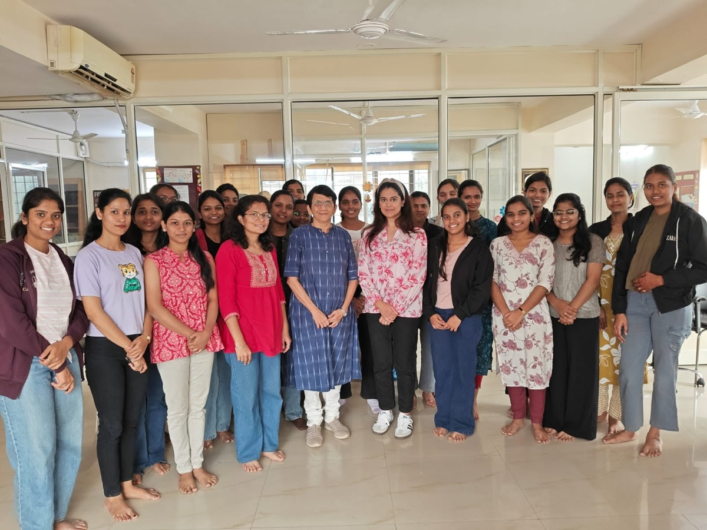
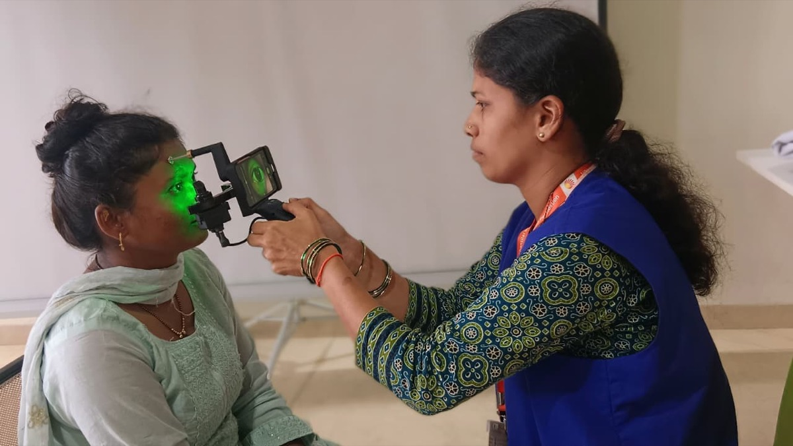
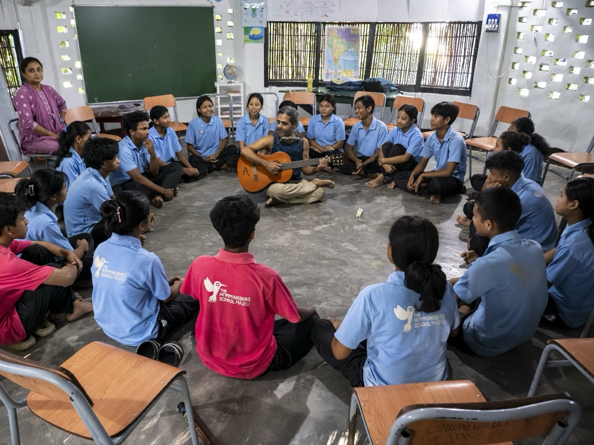

I've never viewed philanthropy as charity or simply the act of giving away wealth. To me, it is an opportunity to invest in India—to back people and institutions working to solve some of our country's most pressing challenges.
That belief did not emerge overnight. Looking back, I realise it has been shaped by experiences spanning my childhood, education, career and entrepreneurial journey.

Often visiting Ratnagiri, Maharashtra, amidst lush forests, rivers and the Konkan coastline, I developed a deep appreciation for nature. Those early years taught me that we are not owners of the environment but its custodians. It sparked a lifelong commitment to biodiversity and conservation.
Another defining influence was my mother.
I grew up at a time when educating girls was not the norm. Despite financial constraints and considerable personal sacrifice, she made it possible for me to pursue my dream of studying at IIT Bombay—at a time when women choosing technology as a career were still a rarity.
My education at IIT Bombay transformed the trajectory of my life. It opened doors to opportunities—from joining Infosys in its formative years to building businesses, leading global teams and working alongside extraordinary people. More importantly, it showed me how access to opportunity can completely change the course of a person's life.
Access to opportunity can completely change the course of a person's life.
A similar belief led me to establish Pumpkin Patch. While it provides quality childcare for young children, its larger purpose is to enable mothers to continue pursuing their careers. Supporting women requires addressing barriers at the workplace but also addressing systemic and societal challenges. It reinforced my belief that thoughtfully designed social enterprises can unlock enormous social impact.

That understanding inspired my first philanthropic initiative, Aatmaja Foundation. Aatmaja Foundation invests in the education of young women from disadvantaged backgrounds, enabling them to pursue professional education and meaningful careers. But our work extends far beyond scholarships. We invest in confidence, leadership, life skills and the belief that these young women can shape their own futures.
Together, these experiences shaped our family's understanding of what meaningful philanthropy could look like. They ultimately led us to establish the Rao Family Trust (RAFT), a private family trust committed to providing patient capital through long-term partnerships with passionate organisations creating lasting change.
In business, one of the first questions we ask is, "Can this scale?" In philanthropy, an equally important question is, "Can this sustain?"

Our focus areas—Education, Biodiversity and Conservation, Technology for Good, Women's Livelihoods and Economic Empowerment, and Disability Inclusion—are deeply personal because each represents an important chapter of my own journey.

While impact metrics are important for accountability, the outcomes that matter most are often the ones that cannot be fully captured in numbers: a young woman becoming the first career-woman in her family, a scientist translating breakthrough research into solutions that improve lives, a community protecting its natural heritage for future generations, or a person with a disability gaining access to education, employment and independence.
These are the kinds of transformations that strengthen institutions, communities and, ultimately, the nation.
My aspiration is for RAFT to be known not by the size of its grants but by the quality of the partnerships it builds, the institutions it helps strengthen and the confidence it gives changemakers to pursue ambitious ideas over the long term.
Above all, I hope our journey encourages more families, entrepreneurs and business leaders to view philanthropy not as charity, but as one of the most meaningful investments we can make in India's future.